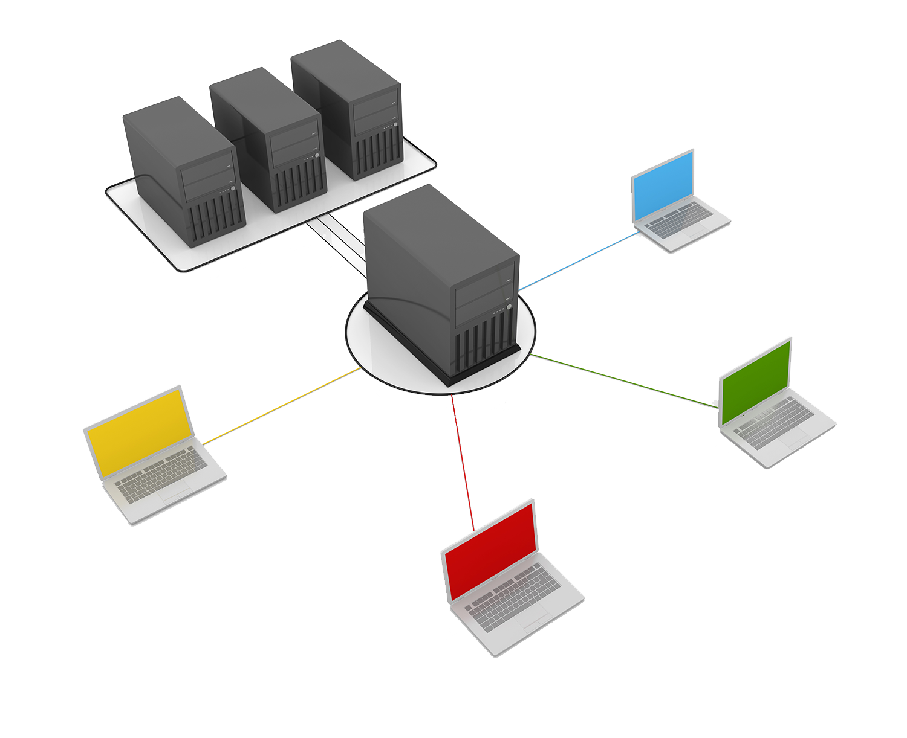

Express.js, a veces también llamado «Express», es un framework de backend Node.js minimalista, rápido y similar a Sinatra, que proporciona características y herramientas robustas para desarrollar aplicaciones de backend escalables. Te ofrece el sistema de enrutamiento y características simplificadas para ampliar el framework con componentes y partes más potentes en función de los casos de uso de tu aplicación.
El framework proporciona un conjunto de herramientas para aplicaciones web, peticiones y respuestas HTTP, enrutamiento y middleware para construir y desplegar aplicaciones a gran escala y preparadas para la empresa.
También proporciona una herramienta de interfaz de línea de comandos (CLI) llamada Node Package Manager (NPM), donde los desarrolladores pueden obtener paquetes desarrollados.
También obliga a los desarrolladores a seguir el principio de No te repitas (DRY).
El principio DRY pretende reducir la repetición de patrones de software, sustituyéndolos por abstracciones, o utilizando normalizaciones de datos para evitar la redundancia.
Flexible y Rápido
Express.js es muy fácil de usar y flexible, y es más rápido que cualquier otro framework Node.js. Al ser un framework minimalista, ofrece un rápido desarrollo de aplicaciones y alivia el estrés de dominar las diferentes partes de un framework más grande. También proporciona ricas características, como un excelente sistema de enrutamiento, middlewares y negociación de contenidos desde el primer momento.
Escalabilidad
Express.js ha demostrado ser muy escalable a lo largo de los años debido al número de grandes empresas que utilizan el framework en su servidor diariamente.
Maneja las peticiones y respuestas de los usuarios de forma eficiente y no requiere apenas configuración adicional cuando se desarrolla una aplicación web a gran escala.
Tiene excelentes módulos, paquetes y recursos adicionales, que ayudan a los desarrolladores a crear aplicaciones web fiables y escalables.
Apoyo de la comunidad
Como el framework es el más popular de Node.js backend, tiene el mayor número de apoyo de la comunidad, recursos y paquetes para cualquier desafío de desarrollo. El apoyo de Google también es amplio, por lo que el framework es una opción popular entre los desarrolladores de Node.js. Su naturaleza de código abierto da a los desarrolladores la oportunidad de crear paquetes y recursos extensibles para facilitar el desarrollo, no sólo para ellos mismos, sino para todos los que programan con Express.js.
Potente sistema de enrutamiento
El framework tiene el sistema de enrutamiento más potente y robusto incorporado por defecto que asiste a su aplicación en respuesta a una solicitud del cliente a través de un endpoint particular.
Con el sistema de enrutamiento de Express.js, puedes dividir tu abultado sistema de enrutamiento en archivos manejables utilizando la instancia de enrutamiento del framework.
El sistema de enrutamiento de Express es útil para gestionar la estructura de tu aplicación, agrupando diferentes rutas en una única carpeta/directorio.
Los desarrolladores crean códigos más mantenibles agrupando las funcionalidades con el enrutador Express y evitando la repetición.
Documentación sobre Express: https://www.npmjs.com/package/express
Dado que Express.js es un framework de Node.js podremos instalarlo como un paquete en
el directorio de nuestro proyecto.
npm init ó npm init --yes
Se genera el “package.json” automáticamente y el proyecto Node.js está creado.
Instalamos Express.js como paquete de esta forma:
npm install express --save
--save para salvar esa dependencia en nuestro “package.json” de forma explícita.
Podemos añadir -g al comando de instalación si lo que queremos es instalar express de
forma global y tenerlo accesible al resto de proyectos que se creen.
Un servidor no es más que un programa que lo único que hace es estar a la espera de que
alguien deje información en un espacio específico y concreto de la memoria del ordenador,
un “puerto”, y cuando una “petición” entre por ese puerto, el programa servidor lanzará una
función que se encargará de hacer lo que sea que hayamos previsto para ella.
Para poner a funcionar el servidor (“levantar” el servidor para ponerlo a “escuchar”) después
de haber instalado las dependencias con npm install arrancamos el documento donde
tenemos nuestro código de express: node servidor.js

Cuando se acceda al directorio raiz “/” se ejecutará una cosa distinta a la ruta “/ejemplojson”
y de igual manera si queremos ejecutar un archivo.html estático e interpretar directamente
“/registro.html” haciendo las funciones de servidor web.
Express es capaz de leer e interpretar archivos estáticos como, por ejemplo, imágenes,
archivos CSS y archivos JavaScript, a través de la función de middleware express.static.